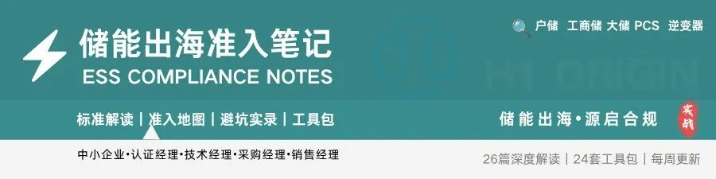
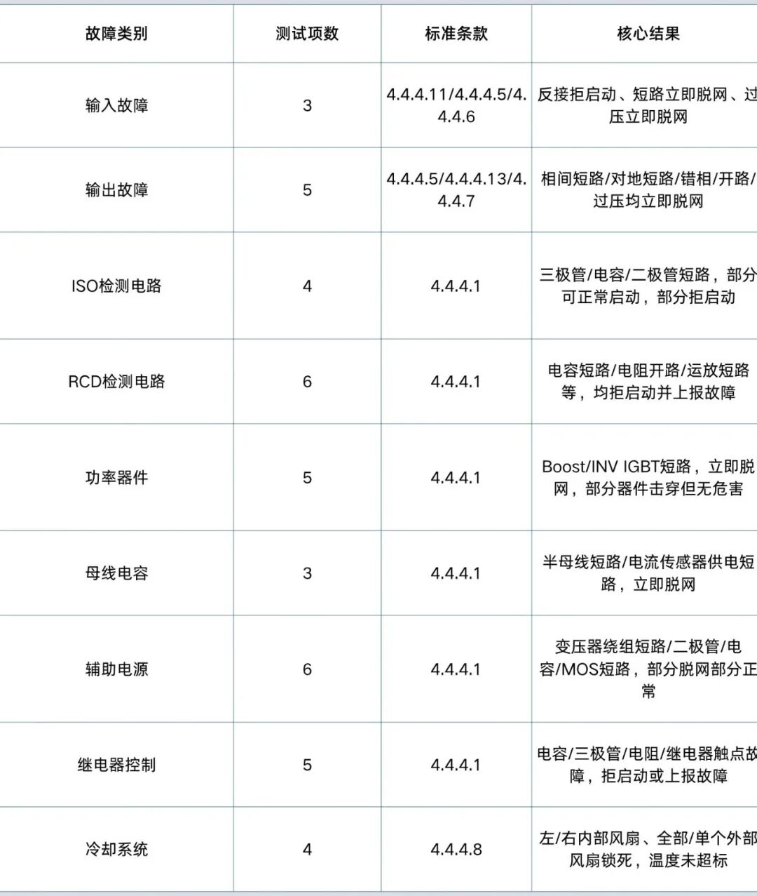
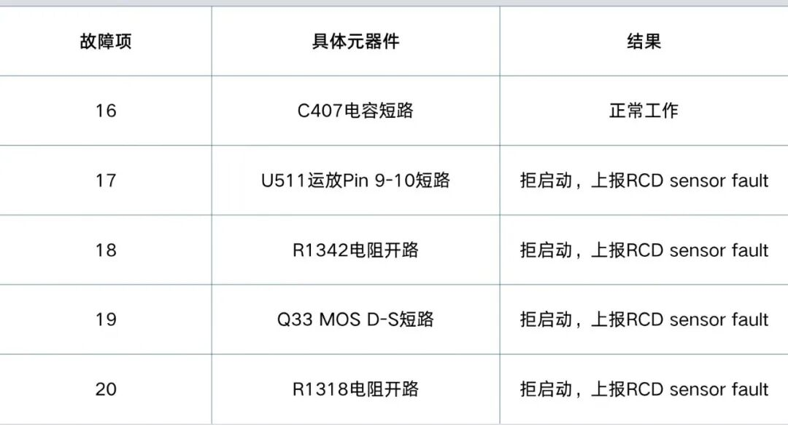
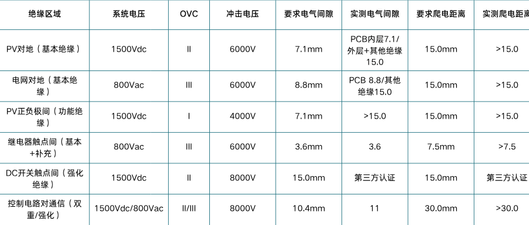
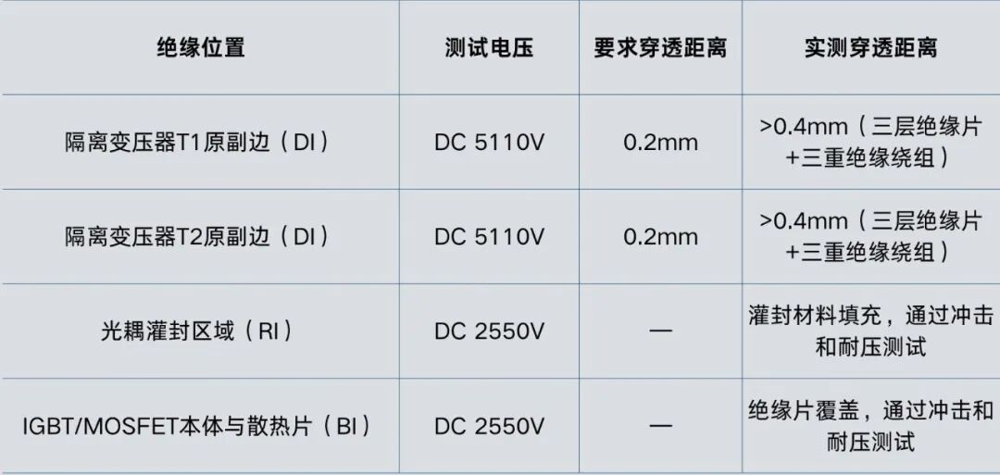
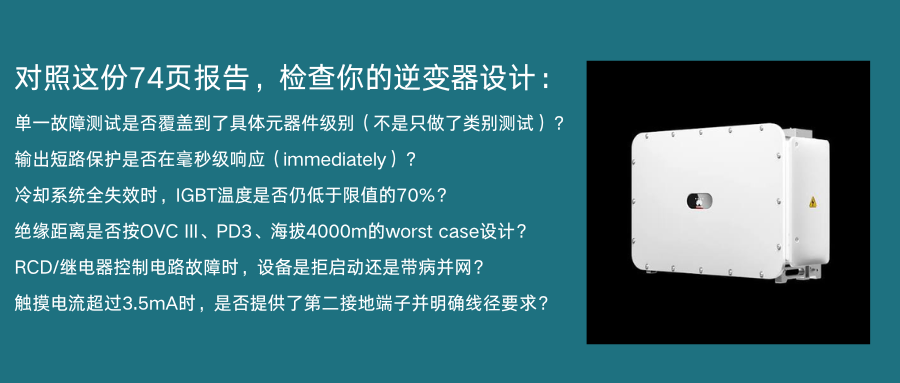

这几天在了解微电网认证的海外标准，朋友也分享了 一份2019年的逆变器测试报告，IEC 62109-1:2010 目前仍是现行有效版本
为什么这份报告值得逐页看
SÜD上海实验室收到一台84kg的逆变器。
15天后，报告签发，74页，覆盖IEC 62109-1:2010全部条款，从通用测试要求到43项单一故障条件测试，verdict全部为P。
这不是一份"抽检合格"的报告。它回答了一个问题：当逆变器内部发生任何单一元器件故障时，设备会不会变成危险源？
受测对象：SUN2000-175KTL，额定功率175kW。
IEC 62109-1的测试逻辑：先正常，再故障，再极端
标准第4章的测试顺序是固定的，不能跳：
Clause 4.3 热测试 → Clause 4.4 单一故障测试 → Clause 4.5 湿度预处理 → Clause 4.6 反灌电压保护 → Clause 4.7 电气额定值测试
华为这台逆变器的热测试做了四组工况，每组持续410-425分钟（约7小时）：
|工况 |PV输入电压|AC输出电压| 输出功率 |环境温度| 测试目的 | |:--|:-----|:-----|:------|:---|:-----------| | 1 | 880V | 720V |171.1kW|40°C|最低满载MPP电压，壁挂| | 2 | 880V | 880V |177.2kW|40°C|最低满载MPP电压，平躺| | 3 |1300V | 720V |140.2kW|40°C|最高满载MPP电压，平躺| | 4 | 880V | 720V |168.3kW|40°C|验证最大直流/交流电流 |
数据来源：Report Page 55-56, Table 4.3
关键发现：
IGBT模块（Phase A）最高温度88.3°C，限值130°C，裕度32%。电感线圈最高118.3°C，限值150°C，裕度21%。这意味着即使在40°C环境温度下满载运行7小时，关键器件温度仍在安全区。
43项单一故障测试，不是14项
报告Page 64-66的Table 4.4列出了43项具体故障测试，远超标准Clause 4.4.4列出的14项通用类别。华为对每一类故障都拆解到了具体元器件。
表1：故障测试分类与核心结果

数据来源：Report Page 64-66, Table 4.4
五个值得细看的测试细节
4.1 输出短路：immediately是关键词
测试条件：L1-L2短路，1080Vdc/800Vac，10分钟。
结果："PV inverter disconnected from grid immediately. No components damage, no hazard."
不是"5秒后脱网"，不是"温度升高后保护"，是immediately。这背后是输出继电器+IGBT驱动保护的硬件联动，不是软件延时。
4.2 直流反接：新手安装的保护网
测试条件：DC+和DC-反接。
结果："PV inverter could not start up. AC relays in open state. indicate String Reversed Fault. No components damage, no hazard."
逆变器拒绝启动，交流继电器保持断开，同时上报"组串反接故障"。这意味着即使安装人员接反了极性，设备不会上电，不会损坏，也不会向电网反送电。
4.3 冷却系统故障：风扇全锁死，温度还能扛住吗
Clause 4.4.4.8要求模拟冷却系统失效。华为做了四组：
-
左侧内部风扇锁死 @40°C（Lie down）
-
右侧内部风扇锁死 @40°C（Lie down）
-
全部外部风扇锁死 @40°C（Lie down）
-
单个外部风扇锁死 @40°C（Lie down）
结果：Page 57-58 Table 4.3显示，INV IGBT模块最高88.3°C（限值130°C），Boost电感线圈最高118.3°C（限值150°C）。全部在安全裕度内。
这意味着即使风扇全部失效，逆变器也不会在10分钟内因过热而损坏。用户有足够时间收到故障报警并安排维护。
4.4 RCD检测电路故障：不是"有没有RCD"，而是"RCD坏了知不知道"
测试项16-20覆盖了RCD检测电路的5种单一故障：

数据来源：Report Page 65-66
5种故障中，4种导致逆变器拒启动并明确上报故障代码。这是Clause 4.4.4.15.1（残余电流监测容错性）的具体实现——RCD电路本身故障时，设备必须知道、必须停机、必须指示。
4.5 继电器控制故障：并网安全的最后一道门
测试项38-43覆盖继电器控制电路：
-
C339电容短路 → 拒启动，上报grid relay fault
-
Q30/Q35三极管短路 → 拒启动
-
R1090电阻开路 → 拒启动
-
K12继电器触点开路/短路 → 拒启动，上报grid relay fault
这意味着即使继电器控制电路的任何一个元器件失效，逆变器都不会在继电器状态不确定的情况下并网。
绝缘距离：海拔4000m的硬指标
Page 68-73的Table 7.3.7是这份报告最技术密集的部分。华为175kW逆变器的关键绝缘数据：

数据来源：Report Page 70-72
所有数据已按海拔4000m修正。如果你的逆变器只标了2000m，想进西藏、青海或南美安第斯山脉，绝缘距离需要重新设计。
绝缘穿透距离：三层绝缘片+三重绝缘绕组
Page 73的Table 7.3.7 distance through insulation：

数据来源：Report Page 73
触摸电流：超过3.5mA的应对
Page 67-68的Table 7.3.6.3.7显示，最大触摸电流14.0mA，超过3.5mA限值。
华为采取了Clause 7.3.6.3.7规定的措施a)：永久连接布线，且保护接地导体截面积至少S/2=25mm²。同时在外壳上提供了第二个保护接地端子（通过锁紧垫圈、螺母、隔离垫圈和UL认证环形端子连接）。
这意味着安装时必须使用至少25mm²的接地线，且建议同时连接两个接地端子。用户手册中已明确说明。
给你的工厂一个自检清单

关于62109：
澳大利亚/新西兰已率先行动：AS/NZS 62109.1:2026和AS/NZS 62109.2:2026已于2026年1月30日发布，为IEC 62109-1:2010和IEC 62109-2:2011的修改采用版。
未来趋势：ED2版本预计将强化与储能系统的兼容性要求、更新绝缘配合条款以适配更高电压等级（如1500V以上），并可能纳入网络安全相关引用。对于出口欧盟的厂商，需密切关注2026年ED2发布后的过渡窗口期。
本文参考文献：
-
标准：IEC 62109-1:2010 (First Edition), IEC 62109-2:2011 (First Edition)
-
检测机构：TÜV SÜD Certification and Testing (China) Co., Ltd. Shanghai Branch
-
测试报告